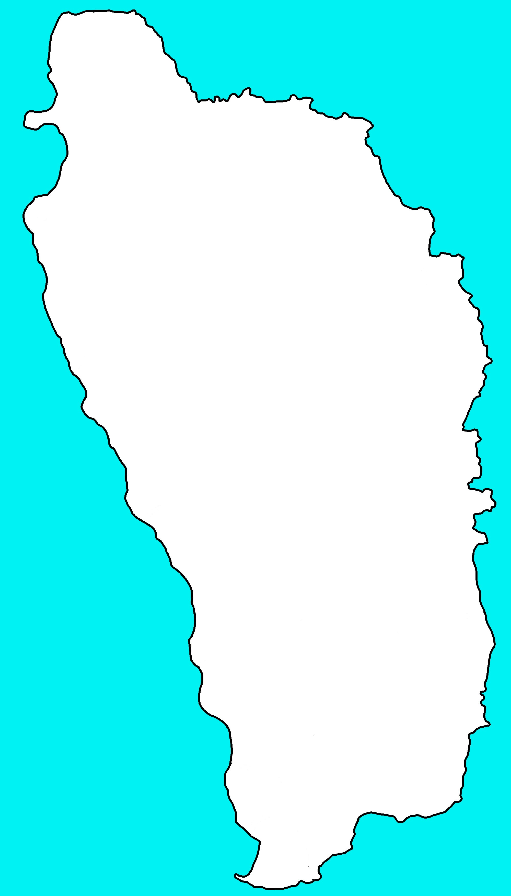
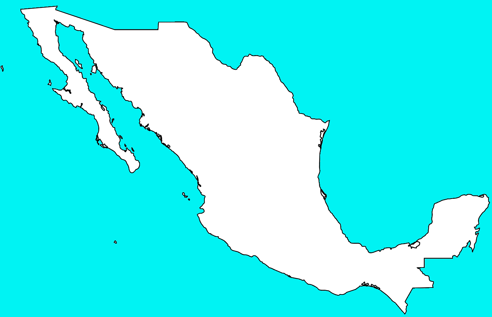
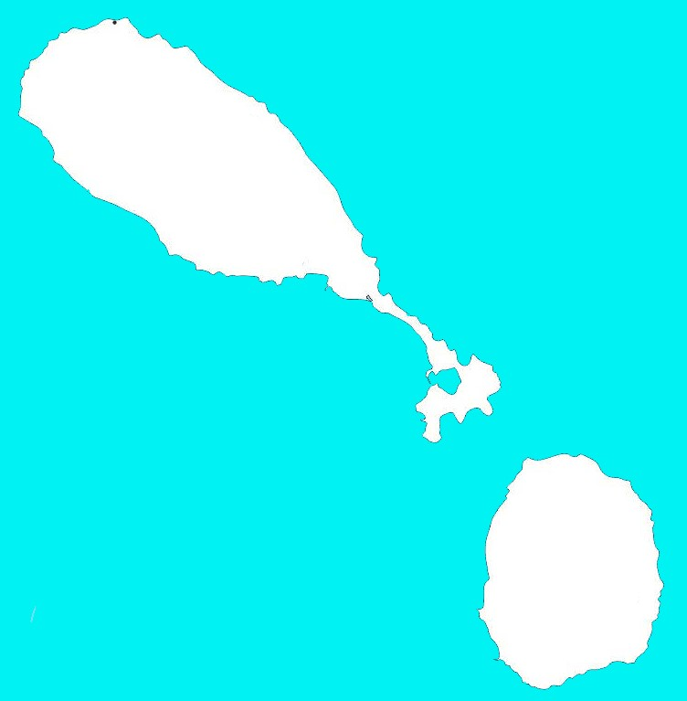

L’Amérique est un continent tout en longueur qui s’étire de l’océan Arctique au Nord jusqu’au Cap Horn au Sud.
Ce continent rassemble pratiquement 1 milliard d’habitants soit environ 15% de la population mondiale.
Cette population est répartie dans 35 pays
elle se divise en Amérique du Nord et en Amérique du Sud
les pays de l'amérique du nord
A
Hymne national:
Juste Antigua, nous te saluons
B
Hymne national:
Marchez, Bahamas
Hymne national:
Dans l'abondance et dans le besoin
Hymne national:
Terre des Libres
C
Hymne national:
Ô Canada
Hymne national:
Noble patrie, ton beau drapeau
Hymne national:
La Bayamaise
D
Hymne national:
Ile de Beauté, Ile de Splendeur
Hymne national:
La République
E
Hymne national:
La Bannière étoilée
G
Hymne national:
Je vous salue Grenade
Hymne national:
Toi notre vieux pays
Hymne national:
Le Guatemala heureux
H
Hymne national:
La Dessalinienne
Hymne national:
Ton drapeau est une splendeur au ciel
J
Hymne national:
Jamaïque, terre que nous aimons
M
Hymne national:
Chant religieux national
N
Hymne national:
Salut à toi, Nicaragua
P
Hymne national:
Hymne de l'Isthme
S
Hymne national:
Oh, Pays de Beauté
Hymne national:
Fils et Filles de Sainte-Lucie
Hymne national:
Saint-Vincent, Pays si Beau
Hymne national:
Hymne National du Salvador
T
Les pays de L'Amérique du Sud
A
Hymne national:
Hymne national argentin
B
Hymne national:
Boliviens, le Destin Propice
Hymne national:
Hymne national brésilien
C
Hymne national:
Hymne national du Chili
Hymne national:
Hymne national de la Colombie
E
Hymne national:
Nous te saluons, Oh Patrie
G
Hymne national:
Chère Pays de Guyana, de Rivières et de Palmiers
P
Hymne national:
Paraguayos, la République ou mourir
Hymne national:
Nous sommes libres, restons-le à jamais
S
Hymne national:
Dieu soit avec le Suriname
U
Hymne national:
Uruguayens, la Patrie ou la Mort !
V
Hymne national:
Gloire au peuple brave